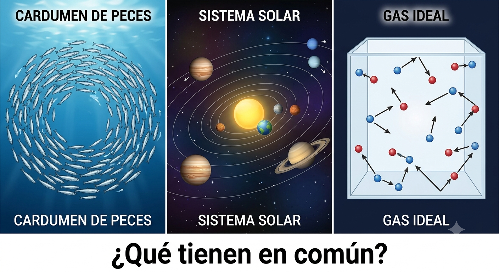
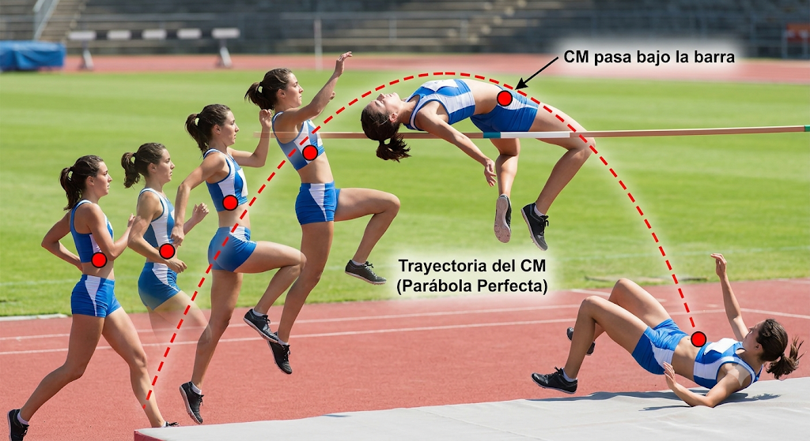

Unidad 6: Dinámica de un sistema de partículas#
Descripción general#
En esta unidad se extiende el estudio de la mecánica desde una sola partícula hacia un sistema formado por varias partículas. Para describir el movimiento global del sistema se introduce el concepto de centro de masa, que permite representar el comportamiento colectivo de todas las partículas mediante un solo punto.
También se estudia cómo se relacionan las fuerzas externas con el movimiento del sistema completo, lo que permite analizar el movimiento del centro de masa y distinguir entre fuerzas internas y externas.
{kind=link}

Objetivo de aprendizaje#
Al finalizar esta unidad, el estudiante será capaz de:
comprender qué es un sistema de partículas
calcular la posición y la velocidad del centro de masa
interpretar físicamente el centro de masa como descriptor del movimiento global del sistema
distinguir entre fuerzas internas y fuerzas externas
relacionar la fuerza externa neta con el movimiento del centro de masa
aplicar estas ideas al análisis de sistemas discretos simples
1. Introducción a los sistemas de partículas#
Hasta ahora se ha estudiado principalmente el movimiento de una partícula individual. Sin embargo, muchos sistemas físicos reales están formados por varias partículas o varios cuerpos que interactúan entre sí.
Ejemplos:
Dos masas unidas por una barra
Un sistema planeta–satélite
Un conjunto de cuerpos en colisión
Un objeto extenso modelado como varias partículas
Cuando se analiza un sistema de partículas, interesa estudiar:
El movimiento de cada partícula
El movimiento global del sistema como un todo
2. Centro de masa#
El centro de masa es el punto en el cual puede considerarse concentrada toda la masa del sistema para describir su movimiento global.
Para un sistema de \(N\) partículas, su vector posición se define como:
donde:
\(m_i\) es la masa de la partícula \(i\);
\(\vec{r}_i\) es su vector posición.
Nota
A menudo, el centro de masa de un objeto o sistema se encuentra en un lugar donde ni siquiera hay materia (como el centro de una dona, o el centro de un sistema binario de estrellas). No pertenece a ninguna partícula individual; le pertenece al sistema como un todo.
Ejemplo: El salto de un atleta de salto alto (técnica Fosbury Flop).#
Cuando el atleta arquea la espalda sobre la barra, su centro de masa en realidad pasa por debajo de la barra, mientras su cuerpo pasa por encima. Es un ejemplo magistral de que el CM es una abstracción geométrica y no necesariamente está dentro de la materia.
{kind=link}

Interpretación física#
El centro de masa describe cómo se mueve el sistema como un todo.
Si la densidad del cuerpo es uniforme, el centro de masa puede coincidir con el centro geométrico, pero en general depende de cómo esté distribuida la masa.
Pregunta abierta: Centro Geométrico (Centroide) vs. Centro de Masa#
Imaginen que tienen una barra de un metro donde la mitad izquierda es de aluminio y la mitad derecha es de plomo. ¿El centro de masa está en la mitad (50 cm)?
Claramente no. El CM se sentirá “atraído” hacia la zona más densa (el plomo).
Por eso es un promedio ponderado: la posición de cada partícula aporta al resultado, pero aquellas con mayor masa tienen más “peso” en la ubicación final del CM.
3. Centro de masa en una dimensión#
Si las partículas están distribuidas sobre el eje \(x\), la posición del centro de masa se calcula como:
Caso de dos partículas#
Para dos masas \(m_1\) y \(m_2\) ubicadas en posiciones \(x_1\) y \(x_2\):
Interpretación#
el centro de masa queda más cerca de la partícula de mayor masa;
si ambas masas son iguales, el centro de masa queda en el punto medio.
4. Centro de masa en dos y tres dimensiones#
En forma vectorial:
con:
Esto permite trabajar con sistemas distribuidos en el plano o en el espacio.
Ejemplo: El Sistema Tierra-Luna#
Consideremos el sistema Tierra-Luna como un sistema de dos particulas. La masa de la Tierra es \(M_T \approx 5.97 \times 10^{24}\) kg y la de la Lun es es \(M_L \approx 7.35 \times 10^{22}\) kg. La distancia promedio entre sus centros es \(D = 384,400\) km. ¿Dónde se ubica el centro de masa del sistema (el baricentro)?
Paso a paso: Establecer el sistema de referencia
Colocamos el origen \((0,0)\) en el centro de la Tierra.Identificar posiciones: \(x_T = 0\), \(x_L = 384,400\) km. Aplicar la fórmula del CM:
Cálculo:
El radio de la Tierra es de unos \(6,371\) km. Esto significa que el baricentro del sistema Tierra-Luna ¡está dentro de la Tierra! Por eso la Tierra no “orbita” a la Luna, sino que ambos “tambalean” alrededor de ese punto interno.
5. Velocidad del centro de masa#
La velocidad del centro de masa es la derivada temporal de su posición.
Se define como:
donde \(\vec{v}_i\) es la velocidad de la partícula \(i\).
Interpretación física#
La velocidad del centro de masa es una velocidad promedio ponderada por las masas del sistema.
Esto significa que las partículas más masivas influyen más en el movimiento global del sistema.
En una dimensión#
6. Aceleración del centro de masa#
La aceleración del centro de masa es la derivada temporal de la velocidad del centro de masa:
o equivalentemente:
Esta magnitud describe cómo cambia el movimiento global del sistema.
7. Fuerzas internas y fuerzas externas#
En un sistema de partículas pueden actuar dos tipos de fuerzas.
Fuerzas internas#
Son las fuerzas que las partículas del sistema se ejercen entre sí.
Ejemplos:
Tensión entre partes de un sistema
Fuerza elástica entre masas unidas por un resorte
Interacción gravitatoria entre cuerpos del sistema
Fuerzas externas#
Son las fuerzas ejercidas por cuerpos que no pertenecen al sistema.
Ejemplos:
Peso total del sistema;
Fuerza normal del entorno;
Fuerza aplicada por una persona o una máquina;
Roce con una superficie externa.
Problema de los tres cuerpos (\(N\)-cuerpos) Simulado#
Este código simula tres cuerpos (estrellas o planetas) con masas distintas interactuando gravitatoriamente.
Copia y pega este código en una celda de Google Colab:
import numpy as np
import matplotlib.pyplot as plt
from scipy.integrate import solve_ivp
# ==========================================
# 1. CONFIGURACIÓN DEL SISTEMA (Física)
# ==========================================
G = 1.0 # Constante de gravitación normalizada
# Masas de los tres cuerpos
m1, m2, m3 = 5.0, 10.0, 15.0
M = m1 + m2 + m3
# Posiciones iniciales [x, y]
r1 = np.array([-1.0, 0.0])
r2 = np.array([1.0, 1.0])
r3 = np.array([0.0, -1.0])
# Velocidades iniciales [vx, vy] (con una deriva constante para mover el sistema)
v_drift = np.array([1.5, 0.5]) # Movimiento del sistema respecto al entorno
v1 = np.array([0.0, 2.0]) + v_drift
v2 = np.array([-1.0, -1.0]) + v_drift
v3 = np.array([1.0, 0.0]) + v_drift
# Vector de estado inicial para el integrador
# [x1, y1, x2, y2, x3, y3, vx1, vy1, vx2, vy2, vx3, vy3]
init_state = np.hstack([r1, r2, r3, v1, v2, v3])
# ==========================================
# 2. ECUACIONES DE MOVIMIENTO (Mecánica)
# ==========================================
def n_body_derivs(t, state):
# Reestructuramos el vector de estado
positions = state[:6].reshape((3, 2))
velocities = state[6:].reshape((3, 2))
r1, r2, r3 = positions[0], positions[1], positions[2]
# Distancias relativas (interacciones internas)
r12 = np.linalg.norm(r2 - r1)
r13 = np.linalg.norm(r3 - r1)
r23 = np.linalg.norm(r3 - r2)
# Aceleraciones usando la Ley de Gravitación de Newton
a1 = G * m2 * (r2 - r1) / r12**3 + G * m3 * (r3 - r1) / r13**3
a2 = G * m1 * (r1 - r2) / r12**3 + G * m3 * (r3 - r2) / r23**3
a3 = G * m1 * (r1 - r3) / r13**3 + G * m2 * (r2 - r3) / r23**3
return np.hstack([velocities.flatten(), a1, a2, a3])
# ==========================================
# 3. INTEGRACIÓN NUMÉRICA (Cómputo)
# ==========================================
t_span = (0, 10)
t_eval = np.linspace(0, 10, 1000)
# Resolvemos usando Runge-Kutta de orden 5(4)
sol = solve_ivp(n_body_derivs, t_span, init_state, t_eval=t_eval, rtol=1e-8)
# Extraemos las posiciones resultantes
x1, y1 = sol.y[0], sol.y[1]
x2, y2 = sol.y[2], sol.y[3]
x3, y3 = sol.y[4], sol.y[5]
# ==========================================
# 4. PROPIEDAD EMERGENTE: Centro de Masas
# ==========================================
x_cm = (m1*x1 + m2*x2 + m3*x3) / M
y_cm = (m1*y1 + m2*y2 + m3*y3) / M
# ==========================================
# 5. VISUALIZACIÓN
# ==========================================
plt.figure(figsize=(10, 7))
# Trayectorias de las partículas individuales (El Caos de las partes)
plt.plot(x1, y1, label=f'Cuerpo 1 (m={m1})', color='crimson', alpha=0.7)
plt.plot(x2, y2, label=f'Cuerpo 2 (m={m2})', color='royalblue', alpha=0.7)
plt.plot(x3, y3, label=f'Cuerpo 3 (m={m3})', color='darkorange', alpha=0.7)
# Posiciones finales (puntos)
plt.scatter([x1[-1]], [y1[-1]], color='crimson', s=m1*10)
plt.scatter([x2[-1]], [y2[-1]], color='royalblue', s=m2*10)
plt.scatter([x3[-1]], [y3[-1]], color='darkorange', s=m3*10)
# Trayectoria del Centro de Masas (El Orden del Todo)
plt.plot(x_cm, y_cm, label='CENTRO DE MASAS (Propiedad Emergente)',
color='black', linestyle='--', linewidth=3)
plt.scatter([x_cm[-1]], [y_cm[-1]], color='black', marker='X', s=200)
# Cosmética del gráfico
plt.title('Dinámica de un Sistema de Partículas\nTrayectorias Individuales vs. Comportamiento Global', fontsize=14, fontweight='bold')
plt.xlabel('Posición X', fontsize=12)
plt.ylabel('Posición Y', fontsize=12)
plt.grid(True, linestyle=':', alpha=0.6)
plt.legend(loc='best', fontsize=10)
plt.axis('equal')
plt.show()
Nota
Reto: “Modifica las masas en el código. ¿Qué sucede con la trayectoria del CM si una masa es mucho más grande que las otras?”
Ejemplo Analítico: Tres partículas de masas \(m_1 = 1.0\text{ kg}\), \(m_2 = 2.0\text{ kg}\) y \(m_3 = 3.0\text{ kg}\) están colocadas en los vértices de un triángulo rectángulo en el plano \(xy\). La partícula 1 está en el origen \((0,0)\), la partícula 2 en \((3.0, 0)\text{ m}\) y la partícula 3 en \((0, 4.0)\text{ m}\). Encuentre las coordenadas del centro de masa del sistema.Solución Analítica:La masa total del sistema es:
Aplicamos las ecuaciones por componentes:
Resultado: El centro de masa se encuentra en el punto \(\vec{r}_{cm} = (1.0, 2.0)\text{ m}\).
Snippet en Python (Para Google Colab): Este código calcula el CM para cualquier número de partículas en 2D y genera un gráfico donde pueden ver cómo el CM es “atraído” por las masas más pesadas.
import numpy as np
import matplotlib.pyplot as plt
# 1. Definición de los datos del problema
masas = np.array([1.0, 2.0, 3.0])
posiciones_x = np.array([0.0, 3.0, 0.0])
posiciones_y = np.array([0.0, 0.0, 4.0])
# 2. Cálculo matemático del Centro de Masa
M = np.sum(masas)
x_cm = np.sum(masas * posiciones_x) / M
y_cm = np.sum(masas * posiciones_y) / M
print(f"Masa total (M): {M} kg")
print(f"Coordenadas del CM: ({x_cm:.2f}, {y_cm:.2f}) m")
# 3. Visualización Gráfica
plt.figure(figsize=(8, 6))
# Graficar las partículas (el tamaño del punto es proporcional a su masa)
plt.scatter(posiciones_x, posiciones_y, s=masas*150, color='royalblue', label='Partículas', zorder=3)
# Colocar etiquetas a cada partícula
for i, m in enumerate(masas):
plt.text(posiciones_x[i]+0.15, posiciones_y[i]+0.15, f"m{i+1}={m}kg", fontsize=11, fontweight='bold')
# Graficar el Centro de Masa
plt.scatter(x_cm, y_cm, color='crimson', marker='X', s=300, label='Centro de Masa (CM)', zorder=4)
plt.text(x_cm+0.15, y_cm-0.15, f"CM ({x_cm:.1f}, {y_cm:.1f})", color='crimson', fontsize=12, fontweight='bold')
# Configuración del gráfico
plt.title('Centro de Masa de un Sistema Discreto', fontsize=14, fontweight='bold')
plt.xlabel('Posición X (m)', fontsize=12)
plt.ylabel('Posición Y (m)', fontsize=12)
plt.xlim(-1, 4)
plt.ylim(-1, 5)
plt.grid(True, linestyle=':', alpha=0.6)
plt.legend(loc='best')
plt.axhline(0, color='black',linewidth=0.5)
plt.axvline(0, color='black',linewidth=0.5)
plt.gca().set_aspect('equal')
plt.show()
8. Movimiento del centro de masa y fuerza externa neta#
Uno de los resultados más importantes en dinámica de sistemas es que el movimiento del centro de masa está gobernado únicamente por la fuerza externa neta.
Matemáticamente:
donde:
\(M = \sum m_i\) es la masa total del sistema;
\(\vec{a}_{cm}\) es la aceleración del centro de masa.
Interpretación física#
Las fuerzas internas se cancelan entre sí al considerar el sistema completo, por lo que solo las fuerzas externas pueden modificar el movimiento global del sistema.
Este resultado permite tratar al sistema completo como si toda su masa estuviera concentrada en el centro de masa.
9. Momentum lineal de un sistema#
El momentum lineal total de un sistema de partículas se define como la suma de los momenta individuales:
Como la velocidad del centro de masa es:
se obtiene:
Esto muestra que el momentum total del sistema puede calcularse usando la masa total y la velocidad del centro de masa.
10. Relación entre fuerza externa y cambio de momentum#
La fuerza externa neta también puede expresarse como la variación temporal del momentum total:
Dado que:
si la masa total del sistema permanece constante:
Esta ecuación conecta directamente la dinámica del sistema con el movimiento de su centro de masa.
11. Sistema aislado#
Un sistema se considera aislado si la fuerza externa neta que actúa sobre él es cero:
Entonces:
y por tanto:
Interpretación#
Si no actúan fuerzas externas netas, el centro de masa permanece en reposo o se mueve con velocidad constante.
12. Aplicaciones típicas del centro de masa#
El concepto de centro de masa es útil para:
describir el movimiento de cuerpos extensos;
analizar sistemas de varias masas;
estudiar colisiones;
comprender trayectorias de objetos compuestos;
separar el movimiento global del sistema del movimiento interno entre sus partes.
13. Ejemplo conceptual sencillo#
Supongamos dos masas:
\(m_1 = 3\text{ kg}\) en \(x_1 = 2\text{ m}\);
\(m_2 = 5\text{ kg}\) en \(x_2 = 6\text{ m}\).
Entonces:
Esto muestra que el centro de masa queda más cerca de la masa mayor.
14. Interpretación del movimiento global#
Un sistema puede tener movimientos internos complejos y, aun así, su centro de masa moverse de forma simple.
Por ejemplo:
En una explosión, las partículas salen en distintas direcciones, pero el centro de masa sigue obedeciendo a las fuerzas externas.
En un objeto lanzado al aire, aunque rote o cambie de orientación, su centro de masa sigue una trayectoria determinada por la fuerza de gravedad.
15. Diferencia entre movimiento interno y movimiento del centro de masa#
En un sistema de partículas pueden coexistir dos tipos de movimiento:
el movimiento del centro de masa;
el movimiento relativo de las partículas respecto del centro de masa.
Esta separación es muy útil porque permite estudiar primero el movimiento global del sistema y luego los movimientos internos si es necesario.
16. Síntesis de la unidad#
En esta unidad se introdujo el concepto de sistema de partículas y se estudió el centro de masa como herramienta para describir el movimiento global del sistema.
Se analizaron:
la posición del centro de masa
la velocidad y aceleración del centro de masa
la diferencia entre fuerzas internas y externas
la relación entre fuerza externa neta y movimiento del centro de masa
el momentum lineal total del sistema
Estos conceptos preparan el estudio del impulso, la conservación del momentum y el análisis de colisiones.
17. Ejemplos#
Fragmentación de un Objeto en Movimiento (2D):#
Un artefacto de masa \(M = 5.0 \text{ kg}\) se desplaza inicialmente en el espacio libre (sin gravedad ni fricción) con una velocidad constante \(\vec{v}_i = 4.0\hat{i} \text{ m/s}\). Repentinamente, una fuerza interna latente provoca una explosión que divide al artefacto en dos fragmentos: El fragmento 1, de masa \(m_1 = 2.0 \text{ kg}\), sale despedido con una velocidad \(\vec{v}_1 = (2.0\hat{i} + 3.0\hat{j}) \text{ m/s}\). El fragmento 2 tiene una masa \(m_2 = 3.0 \text{ kg}\). Determine la velocidad vectorial \(\vec{v}_2\) del segundo fragmento inmediatamente después de la explosión y demuestre que el Centro de Masa no se enteró del evento.
Paso 1: Calcular el momentum inicial del sistema (\(\vec{P}_i\))
Paso 2: Plantear el momentum final del sistema (\(\vec{P}_f\))Tras la explosión, el momentum es la suma de las partes:
Paso 3: Aplicar la Conservación del MomentumComo la explosión fue provocada por fuerzas puramente internas, \(\sum \vec{F}_{ext} = 0\), por lo tanto \(\vec{P}_i = \vec{P}_f\):
Separamos por componentes cartesianas para resolver:En el eje X:
En el eje Y:
Resultado: La velocidad del segundo fragmento es \(\vec{v}_2 = (5.33\hat{i} - 2.0\hat{j}) \text{ m/s}\).
Código (Para Google Colab)#
import numpy as np
import matplotlib.pyplot as plt
# 1. PARÁMETROS FÍSICOS Y SOLUCIÓN
M = 5.0
m1 = 2.0
m2 = 3.0
v_inicial = np.array([4.0, 0.0])
v1 = np.array([2.0, 3.0])
# Solución analítica hallada
v2 = np.array([16.0/3.0, -2.0])
# Tiempos de simulación
t_explosion = 2.0
t_final = 5.0
dt = 0.05
t_antes = np.arange(0, t_explosion, dt)
t_despues = np.arange(t_explosion, t_final, dt)
# 2. CÁLCULO DE TRAYECTORIAS
# Antes de la explosión (Posición inicial en el origen)
x_antes = v_inicial[0] * t_antes
y_antes = v_inicial[1] * t_antes
# Punto exacto de la explosión
r_exp = v_inicial * t_explosion
# Después de la explosión
x1_desp = r_exp[0] + v1[0] * (t_despues - t_explosion)
y1_desp = r_exp[1] + v1[1] * (t_despues - t_explosion)
x2_desp = r_exp[0] + v2[0] * (t_despues - t_explosion)
y2_desp = r_exp[1] + v2[1] * (t_despues - t_explosion)
# Trayectoria simulada del Centro de Masas (Todo el tiempo)
x_cm_desp = (m1 * x1_desp + m2 * x2_desp) / M
y_cm_desp = (m1 * y1_desp + m2 * y2_desp) / M
# 3. CÁLCULO DEL MOMENTUM EN EL TIEMPO
t_total = np.concatenate([t_antes, t_despues])
P_x = np.zeros_like(t_total)
P_y = np.zeros_like(t_total)
# Llenar vectores de momentum
P_x[:len(t_antes)] = M * v_inicial[0]
P_y[:len(t_antes)] = M * v_inicial[1]
P_x[len(t_antes):] = m1 * v1[0] + m2 * v2[0]
P_y[len(t_antes):] = m1 * v1[1] + m2 * v2[1]
# 4. VISUALIZACIÓN GRÁFICA (SUBPLOTS)
fig, (ax1, ax2) = plt.subplots(1, 2, figsize=(15, 6))
# --- GRÁFICO 1: ESPACIO REAL ---
ax1.plot(x_antes, y_antes, color='black', linewidth=3, label='Objeto Completo (M=5kg)')
ax1.plot(x1_desp, y1_desp, color='crimson', linestyle=':', linewidth=2, label='Fragmento 1 (m1=2kg)')
ax1.plot(x2_desp, y2_desp, color='royalblue', linestyle=':', linewidth=2, label='Fragmento 2 (m2=3kg)')
ax1.plot(np.concatenate([x_antes, x_cm_desp]), np.concatenate([y_antes, y_cm_desp]),
color='green', linestyle='--', linewidth=2, label='Centro de Masa (Invariante)')
ax1.scatter(r_exp[0], r_exp[1], color='orange', marker='*', s=300, zorder=5, label='¡EXPLOSIÓN!')
ax1.set_title('Trayectorias en el Espacio XY', fontsize=12, fontweight='bold')
ax1.set_xlabel('Posición X (m)')
ax1.set_ylabel('Posición Y (m)')
ax1.grid(True, alpha=0.4)
ax1.legend()
ax1.set_aspect('equal')
# --- GRÁFICO 2: MOMENTUM LINEAL ---
ax2.plot(t_total, P_x, color='darkblue', linewidth=2.5, label='$P_x$ Total del Sistema')
ax2.plot(t_total, P_y, color='darkorange', linewidth=2.5, label='$P_y$ Total del Sistema')
ax2.axvline(t_explosion, color='red', linestyle='-.', label='Momento de la Explosión')
ax2.set_title('Momentum Lineal Total vs. Tiempo', fontsize=12, fontweight='bold')
ax2.set_xlabel('Tiempo (s)')
ax2.set_ylabel('Momentum ($kg \\cdot m/s$)')
ax2.set_ylim(-5, 25)
ax2.grid(True, alpha=0.4)
ax2.legend()
plt.tight_layout()
plt.show()
Ejercicios Resueltos — Unidad 6: Dinámica de un sistema de partículas#
Ejercicio 6.1 — Centro de masa de un sistema unidimensional#
Problema 6.1
Tres partículas se encuentran distribuidas sobre el eje \(x\):
Partícula |
Masa \(m_i\) (kg) |
Posición \(x_i\) (m) |
|---|---|---|
1 |
2,0 |
0,0 |
2 |
4,0 |
3,0 |
3 |
6,0 |
8,0 |
Calcule la posición del centro de masa del sistema.
Diagrama conceptual#
Las partículas están ordenadas sobre el eje \(x\). Como \(m_3 > m_2 > m_1\), se espera que el centro de masa quede desplazado hacia la derecha, más cerca de \(m_3\).
Marco conceptual#
Para un sistema de \(N\) partículas distribuidas sobre el eje \(x\), la posición del centro de masa se define como el promedio ponderado de las posiciones individuales:
Datos del problema#
Desarrollo#
Paso 1. Calcular la masa total del sistema:
Paso 2. Calcular el numerador de la expresión (6.1.1):
Paso 3. Sustituir en (6.1.1):
Verificación: casos límite#
Condición |
Predicción teórica |
Consistencia |
|---|---|---|
\(m_3 \to 0\) |
\(x_{cm} \to \frac{(2)(0)+(4)(3)}{6} = 2{,}0\ \text{m}\) |
✓ |
\(m_1 = m_2 = m_3\) |
\(x_{cm} = \frac{0+3+8}{3} \approx 3{,}67\ \text{m}\) |
✓ |
\(m_1 \to \infty\) |
\(x_{cm} \to 0\ \text{m}\) |
✓ |
Interpretación física#
El centro de masa se ubica en \(x_{cm} = 5{,}0\ \text{m}\), claramente más cerca de \(m_3 = 6{,}0\ \text{kg}\) ubicada en \(x = 8{,}0\ \text{m}\) que de las demás. Esto confirma que el centro de masa es un promedio ponderado: las partículas más masivas «atraen» al punto representativo del sistema hacia su posición. Nótese que \(x_{cm}\) no coincide con ninguna de las partículas, sino que es una propiedad emergente del sistema en su conjunto.
Nota
Referencia: Malthe-Sørenssen, A. (2015). Elementary Mechanics Using Python. Springer. §13.1, ec. (13.1).
Ejercicio 6.2 — Conservación de la velocidad del centro de masa en un sistema aislado#
Problema 6.2
Un patinador de masa \(M = 60{,}0\ \text{kg}\) se encuentra en reposo sobre una superficie horizontal sin fricción. Lanza horizontalmente un paquete de masa \(m_p = 10{,}0\ \text{kg}\) con velocidad \(\vec{v}_p = -8{,}0\,\hat{i}\ \text{m/s}\) (hacia la izquierda).
(a) Determine la velocidad del patinador inmediatamente después del lanzamiento.
(b) Verifique que la velocidad del centro de masa del sistema se conserva antes y después del lanzamiento.
Diagrama de cuerpo libre del sistema#
Antes: [patinador + paquete] → en reposo
M_total = 70 kg
v_i = 0
Después: [paquete] ←←← →→→ [patinador]
v_p = −8,0 m/s v_s = ?
Marco conceptual#
El sistema está aislado: la superficie no ejerce fricción, y las fuerzas de contacto entre patinador y paquete son internas al sistema. Por tanto:
La velocidad del centro de masa también se conserva:
Datos del problema#
Desarrollo#
Parte (a): Velocidad del patinador#
Paso 1. Calcular el momentum inicial del sistema:
Paso 2. Plantear la conservación del momentum (de (6.2.1)):
Paso 3. Despejar \(\vec{v}_s\):
El patinador se mueve hacia la derecha, como exige la conservación del momentum.
Parte (b): Verificación de la velocidad del CM#
Antes del lanzamiento:
Después del lanzamiento:
Verificación: casos límite#
Condición |
Predicción |
Consistencia |
|---|---|---|
\(m_p \to 0\) |
\(v_s \to 0\) |
✓ |
\(m_p = M\) (masas iguales) |
\(v_s = -v_p = +8{,}0\ \text{m/s}\) |
✓ |
\(v_p \to 0\) |
\(v_s \to 0\) |
✓ |
Interpretación física#
Aunque el lanzamiento es un evento violento que cambia drásticamente los estados de movimiento internos del sistema, el centro de masa permanece en reposo durante todo el proceso. Esto ilustra el principio central de la dinámica de sistemas: las fuerzas internas no pueden modificar el movimiento del centro de masa. Solo una fuerza externa neta podría hacerlo. El CM actúa como un observador impasible del caos interno.
Nota
Referencia: Malthe-Sørenssen, A. (2015). Elementary Mechanics Using Python. Springer. §13.3, ec. (13.18)–(13.20).
Ejercicio 6.3 — Dinámica del CM bajo fuerza externa: sistema de dos bloques#
Problema 6.3
Dos bloques de masas \(m_1 = 3{,}0\ \text{kg}\) y \(m_2 = 5{,}0\ \text{kg}\) reposan sobre una superficie horizontal sin fricción, conectados por un hilo inextensible de masa despreciable. Se aplica una fuerza horizontal \(F = 16{,}0\ \text{N}\) sobre el bloque \(m_2\).
(a) Calcule la aceleración del centro de masa del sistema.
(b) Determine la tensión \(T\) en el hilo.
© Verifique el resultado aplicando la segunda ley de Newton a cada bloque individualmente.
Diagrama de cuerpo libre#
T → [m₁ = 3 kg] ——hilo—— [m₂ = 5 kg] ← F = 16 N
Fuerzas externas sobre el sistema: solo F (la tensión T es interna)
Marco conceptual#
Para el sistema completo, las fuerzas de tensión son internas y se cancelan. La segunda ley de Newton para el sistema de partículas es:
donde \(M = m_1 + m_2\) es la masa total y \(\vec{a}_{cm}\) es la aceleración del centro de masa.
Datos del problema#
Desarrollo#
Parte (a): Aceleración del CM#
Paso 1. Calcular la masa total:
Paso 2. Aplicar (6.3.1) al sistema completo. La única fuerza externa horizontal es \(F\):
Paso 3. Despejar \(a_{cm}\):
Parte (b): Tensión en el hilo#
Dado que el hilo es inextensible, ambos bloques tienen la misma aceleración \(a = a_{cm} = 2{,}0\ \text{m/s}^2\). Aplicando la segunda ley de Newton al bloque \(m_1\) como subsistema (la única fuerza horizontal sobre él es la tensión \(T\)):
Parte ©: Verificación sobre \(m_2\)#
Aplicando la segunda ley de Newton al bloque \(m_2\) (recibe \(F\) hacia la derecha y \(T\) hacia la izquierda):
Verificación: casos límite#
Condición |
Predicción |
Consistencia |
|---|---|---|
\(m_1 \to 0\) |
\(T \to 0\), \(a_{cm} \to F/m_2\) |
✓ |
\(m_2 \to \infty\) |
\(a_{cm} \to 0\), \(T \to 0\) |
✓ |
\(F = 0\) |
\(a_{cm} = 0\), \(T = 0\) |
✓ |
\(m_1 = m_2 = 4{,}0\ \text{kg}\) |
\(a_{cm} = 2{,}0\ \text{m/s}^2\), \(T = 8{,}0\ \text{N}\) |
✓ |
Interpretación física#
Este problema ilustra la potencia del enfoque de sistemas: al tratar el conjunto como una sola entidad, se obtiene la aceleración del CM directamente desde la fuerza externa, sin necesidad de conocer los detalles de la interacción interna (la tensión). Una vez conocida la aceleración global, se puede «bajar» al nivel de cada partícula individual para encontrar las fuerzas internas. Esta estrategia de dos niveles —sistema global primero, subsistema después— es el método canónico de análisis en dinámica de sistemas de partículas.
Nota
Referencia: Malthe-Sørenssen, A. (2015). Elementary Mechanics Using Python. Springer. §13.2, ec. (13.10)–(13.12).
Conceptos clave#
sistema de partículas
centro de masa
posición del centro de masa
velocidad del centro de masa
aceleración del centro de masa
fuerzas internas
fuerzas externas
masa total
momentum lineal del sistema
sistema aislado
Fórmulas clave#
Guía asociada#
Guía 6: Dinámica de un sistema de partículas